- TS Playground Übung selbst machen - Toolbox ausprobieren und Übung selbst machen - Add Star Treck Background Noise: https://youtu.be/ZPoqNeR3_UA - Use Hourglass to show remaining time
Neural Networks and Deep Learning
Oliver Zeigermann / @DJCordhose
https://djcordhose.github.io/ai/2018_haw_ml_nn.html- js.tensorflow im Codepen für mninst Beispiel - wie funktioniert categorical_crossentropy, Algorithm - Distill Pub (https://distill.pub/2018/building-blocks/) als Praktikum: Also Erklärung wie CNNs funktionieren - https://beta.observablehq.com/@nsthorat/visualizing-activations-of-mobilenet-with-tensorflow-js - Convert mninst to observablehq notebook if possible https://beta.observablehq.com/@zaidalyafeai/an-intractive-introduction-to-tensorflow-js
The Artificial Neuron
The basis of Neural Networks
How does an artificial neuron work?
There are several activation functions you may encounter in practice:
Step
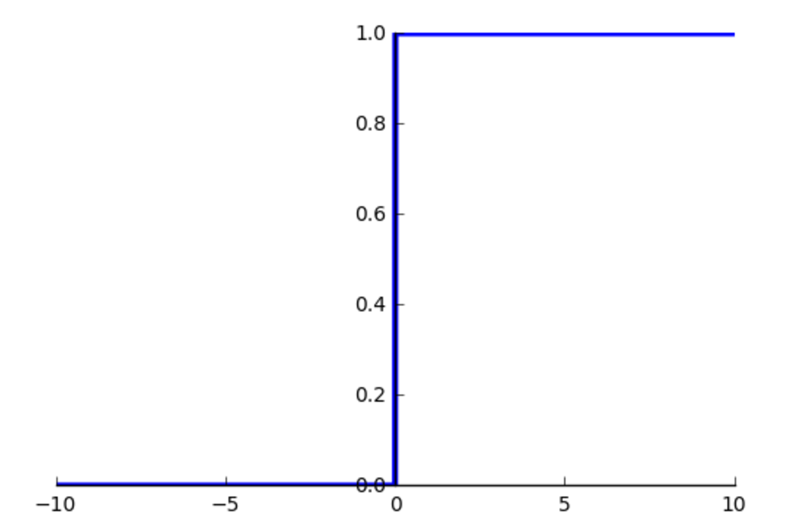original version simulating transition from passive to active
Sigmoid
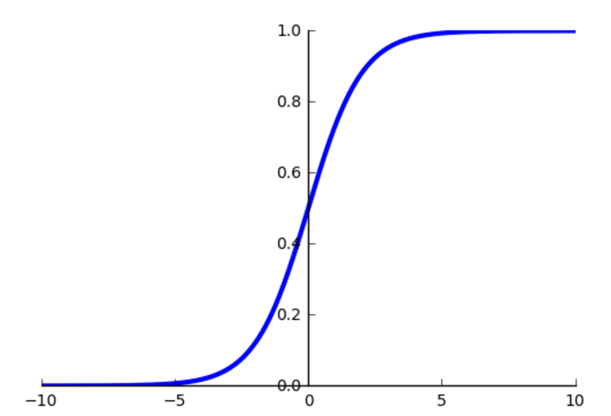continuously differentiable version of step function
Relu: Rectified Linear Unit
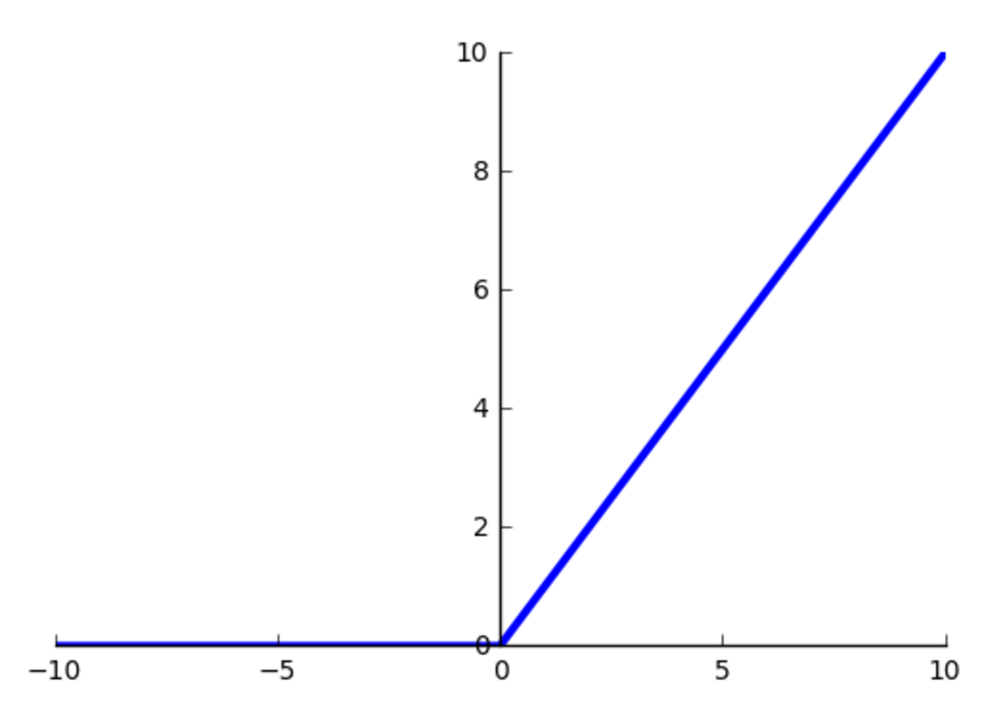Mostly used for Convolutional Networks (more later)
Artificial neuron to neural networks
In Theory a single hidden can approximate any function
In practice 2-3 hidden layers seem optimal
Convolutional Networks often have more than 100 layers (more on that later)
Tensorflow Playground
Understanding the Basics of Neural Networks

Experiment
Make some sense of artificial neurons and neural networks using the TensorFlow Playground
- What can you do with a single neuron and why?
- Configure a minimal network to deliver a good result on the initial data set
- Get an intuition for the learning rate - can you change the learning rate in such a way the network no longer trains properly?
Applying Deep Neural Networks to our problem
Using TensorFlow
https://www.tensorflow.org/A sample architecture using 2 fully connected hidden layers
inputs = Input(name='input', shape=(3, ))
x = Dense(100, name='hidden1', activation='relu')(inputs)
x = Dense(100, name='hidden2', activation='relu')(x)
Softmax: Categories with likelyhoods
predictions = Dense(3, name='softmax', activation='softmax')(x)
Where is the cost / loss / error?
The loss is calculated from the difference between the softmax output and the known true category
categorical_crossentropy is the algorithm to calculate this loss
model = Model(input=inputs, output=predictions)
model.compile(optimizer='adam',
loss='categorical_crossentropy',
metrics=['accuracy'])
adam is the algorithm to minimize loss
Bringing it all together
# splitting test from training data
X_train, X_test, y_train, y_test =
train_test_split(X, y, test_size=0.4)
# convert the numerical encoding of category
# to one hot to match softmax
y_train_categorical = to_categorical(y_train, 3)
# kick off training for 1000 iterations
model.fit(X_train, y_train_categorical, epochs=1000)
What does the neural network learn?
All the weights of a the neurons
model.summary()
_________________________________________________________________
Layer (type) Output Shape Param #
=================================================================
input (InputLayer) (None, 3) 0
_________________________________________________________________
hidden1 (Dense) (None, 100) 400
_________________________________________________________________
hidden2 (Dense) (None, 100) 10100
_________________________________________________________________
softmax (Dense) (None, 3) 303
=================================================================
Total params: 10,803
Trainable params: 10,803
Non-trainable params: 0
_________________________________________________________________Visualizing the learning Process
(Stochastic) Gradient Descent (SGD)
Minimizing the error by changing the trainable parameters
For just 2 parameters you can image a scenary with hills and you try to find the deepest valley
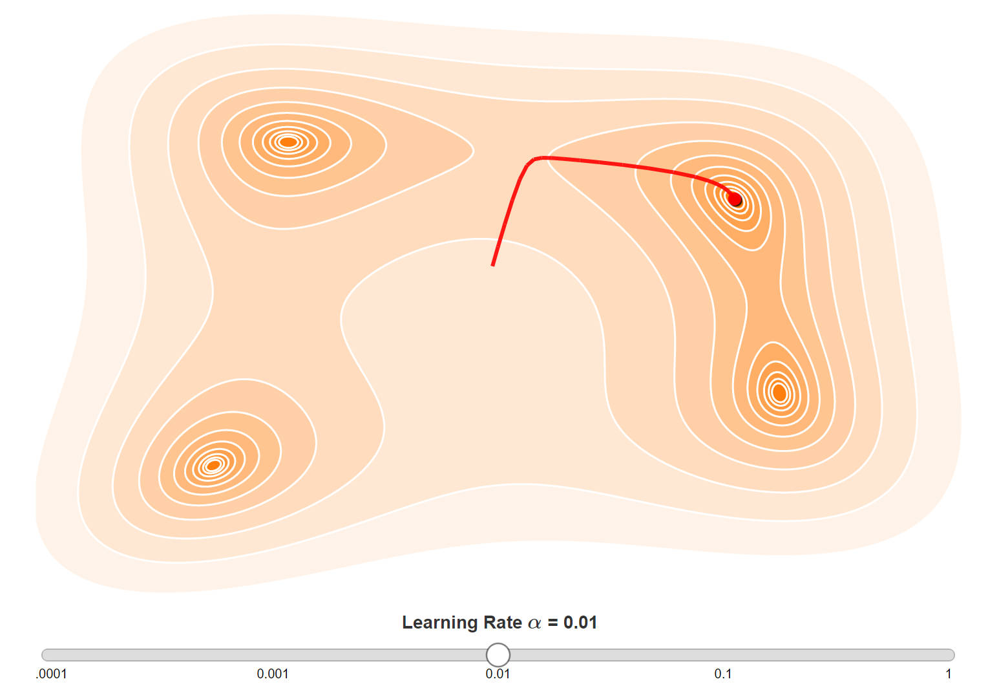http://www.benfrederickson.com/numerical-optimization/
A too high learning rate might miss the mimimum, a too low one might be slow
Regularization: Avoid Overfitting
from keras.layers import Dropout
x = Dense(100, name='hidden1', activation='relu')(inputs)
x = Dropout(0.15)(x)
x = Dense(100, name='hidden2', activation='relu')(x)
x = Dropout(0.15)(x)
Shared Programming Exercise
Configure a deep neural network to solve our problem
- We Use all available input features (3)
- Change the configured number of neurons per layer
- Add dropout to reduce overfitting
- Change the number of layers
- Can you explain the number of trainable parameters?
- How do you explain the very different decision boundaries per km per year?
Do your work in 4-tf-keras-nn
Best known results using Dropout
only approx. 79% accuracy on train data, but also 77% on test data
Boundaries even more smooth
Matching Model
drop_out = 0.15
inputs = Input(name='input', shape=(3, ))
x = Dense(100, name='hidden1', activation='relu')(inputs)
x = Dropout(drop_out)(x)
x = Dense(100, name='hidden2', activation='relu')(x)
x = Dropout(drop_out)(x)
x = Dense(100, name='hidden3', activation='relu')(x)
x = Dropout(drop_out)(x)
predictions = Dense(3, name='softmax', activation='softmax')(x)
Let the GPU burn
Convolutional neural networks
Not bad, but: Neural Networks are best for non symbolic data
Like classifying images
Ansatz nach Art der Daten
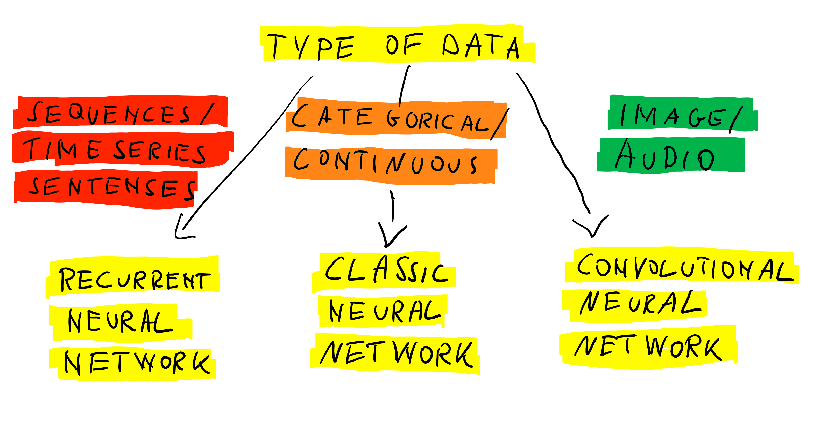Use of GPU for non symbolic data
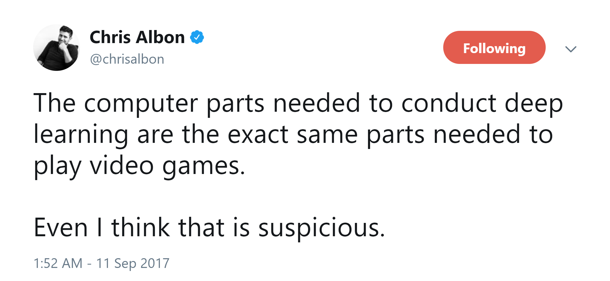https://twitter.com/chrisalbon/status/907028933693947904?s=03
Why the recent break throughs?

Cray X-MP
Supercomputer (1982)

Titan 5 im Gamer PC (2017)
... but we also have
- Smarter Learning Strategies (more hidden layers = Deep Learning)
- Big Data
Unfortunately...
For all real problems you will need powerful GPU(s)
And even then you might have to wait several minutes, hours, days, or even weeks for the result of a single training run
To make matters worse: TensorFlow only supports NVIDIA GPUs and installation of drivers is no fun
We restrict ourselves to basic examples on the web that work with any GPU
Additionally...
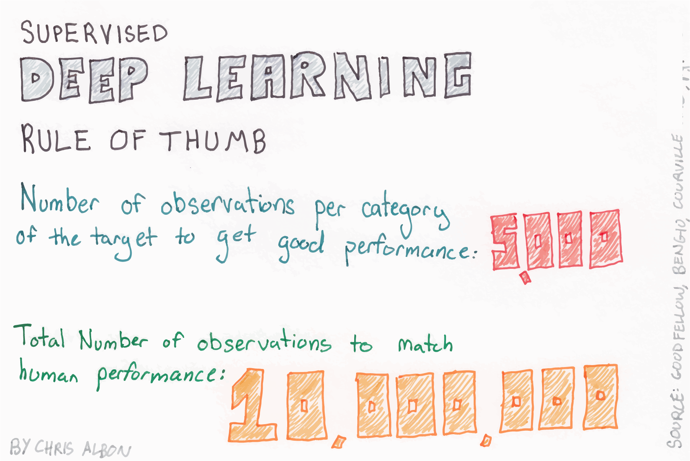Architectures of Convolutional Neural Networks: VGG
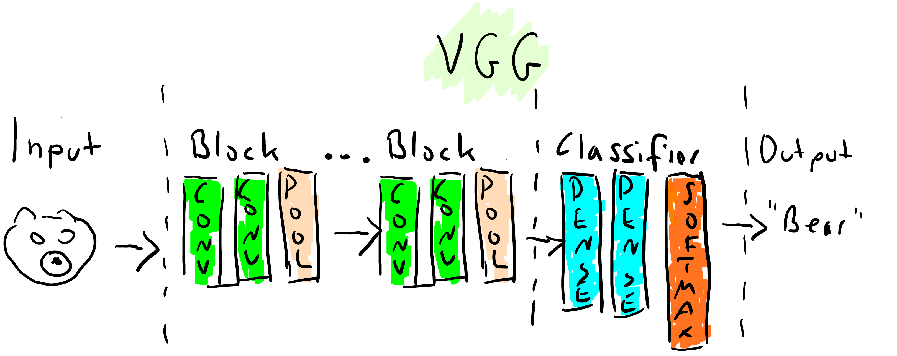There are a number of specialized neural network layers
How do Convolutions work - Image Kernels
You might know from Photoshop etc., used in Convolutional Neural Networks
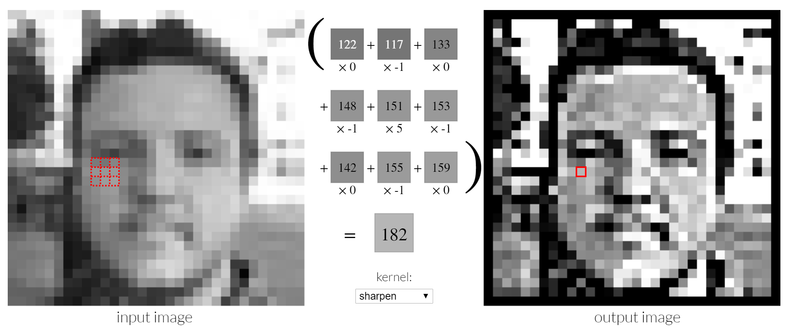Sample Architecture: Google Inception V3
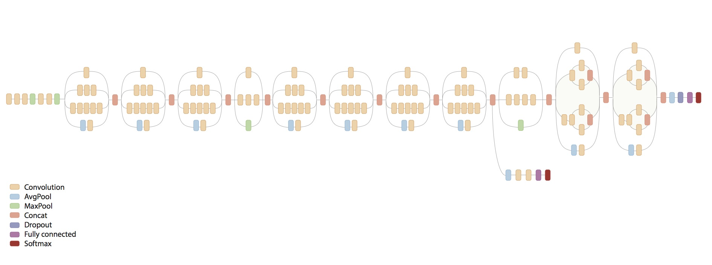MNIST - Using a model already trained
Exploring the different types layers together
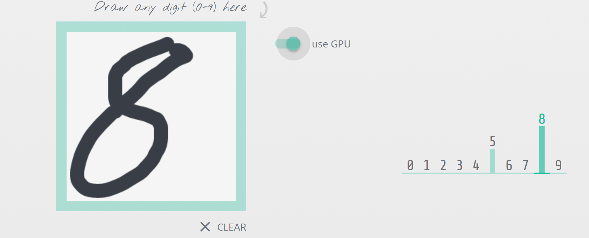Training a network

Shared Exercise #4
Use tensorflow.js to experiment on the MNIST data set
model.jsReference: https://js.tensorflow.org/api/0.8.0/
Diskussion: Auf der Suche nach Intelligenz
Sind die Ansätze intelligent?